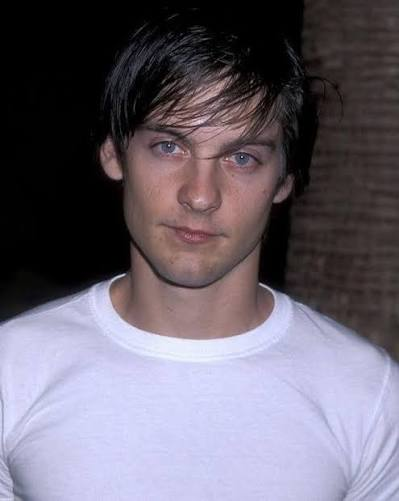
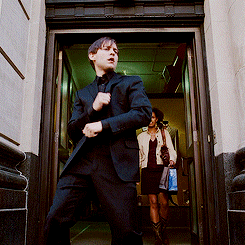

From soft-spoken indie roles to the mask that redefined the modern superhero movie, Tobey Maguire built a career on quiet vulnerability — on screen and off it.


Tobey Maguire (Hover to dance)
Tobey Maguire began acting as a teenager in the late 1980s, building a reputation through the '90s in understated, character-driven films like The Ice Storm, Pleasantville, and The Cider House Rules — roles that traded spectacle for restraint.
In 2002, he stepped into the red-and-blue suit for Sam Raimi's Spider-Man, a role that reshaped what a superhero lead could look like: awkward, sincere, and emotionally open rather than invincible. The trilogy that followed became a template for the genre's future.
Beyond acting, Maguire has worked as a producer and is known for keeping a famously low public profile — letting the work, not the persona, do most of the talking.
Click any line to play Tobey's actual voice line:
Before landing his breakout roles, Maguire auditioned for all sorts of projects as a young actor navigating Hollywood in the early '90s.
To play Spider-Man, he underwent months of physical training — gymnastics, martial arts, and weightlifting — to convincingly move like the wall-crawler.
Long before the mask, he built his craft in small, character-heavy films alongside directors like Ang Lee and Gary Ross.
Off-screen, Maguire is well known in poker circles, having played in high-stakes games alongside other celebrities and professionals.
He returned to the role in 2021's Spider-Man: No Way Home, appearing alongside the actors who followed him into the suit.
Stop the needle inside the green delivery zone.
Tap the web-shooter for a random trivia fact.